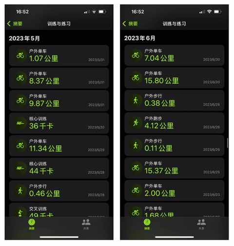
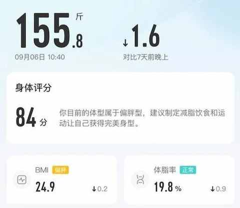
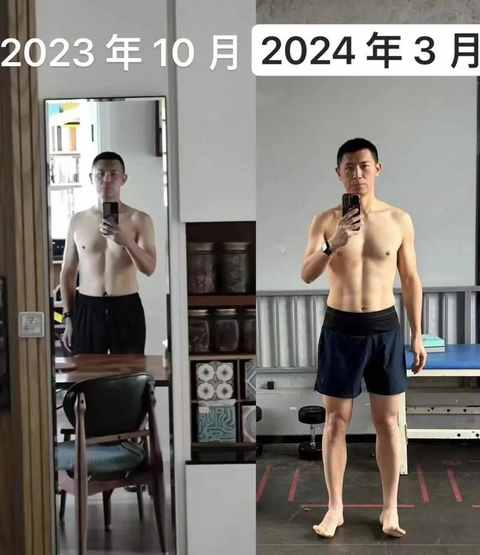
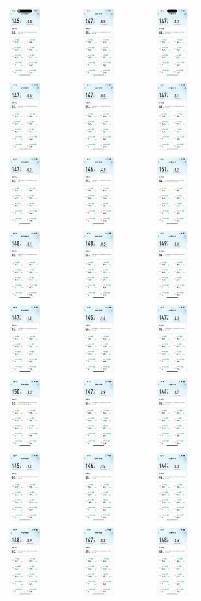
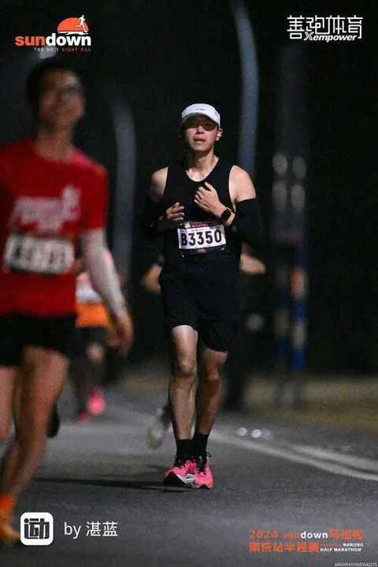
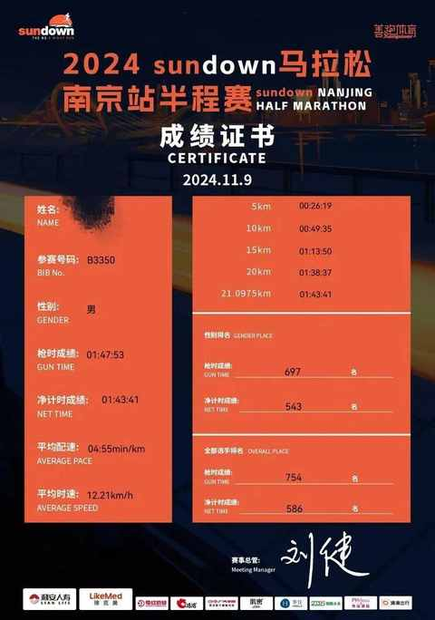
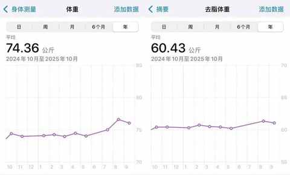

中年男人，你得主动去油啊！最快的方式就是减重！
一、 人到中年，”油“ 然而生
最近两年，每当在不小心看到多年前的照片时，会恍惚会看不下去。
不想再多看一眼，因为照片中的人是现在的 plus 版本+油腻版本。

而这一切，不对比则完全感知不到！
所以，越仔细对比越能 get 到：
为什么 即使生活习惯和前些年没有变化，一到中年突然就显得油腻了。
核心原因是身体机能的逐步退化：
- 消化不好
- 易累
- 睡眠质量下降
- 长胖或体脂上升
- 体检指标异常
- ……
想要维持身体机能就必须介入变量，通过量的积累带来改变。
你得主动介入，告诉身体，谁才是他的主人！
二、主动去油的措施
措施都极其简单，小学生都能看明白，但去油着实是一件难度颇高的事情。
① 保持整洁:
难度：⭐️⭐️
- 勤剪头发
- 勤剃胡须
② 控制体重:
难度：⭐️⭐️⭐️⭐️
- 少吃一点
- 定期运动
③ 重塑习惯:
难度： ⭐️⭐️⭐️⭐️⭐️
- 融入健康的生活方式
- 早睡早起
- 清淡饮食
三、要减重，难的是坚持吗？
难的是在没有正确理念下的坚持，要用正确的理论去指导实践，在一天天一次次的实践中把细节做好！
① 难在没有正确的理念
- 任何时候，请尊重并接受 个体差异
- 最好的方案， 能 无痛坚持下来的方案 才是
- 慢就是快 ，能最大程度巩固成果
- 少吃的同时，要均衡摄入 三大营养素
- 不放弃 ，每个阶段都有瓶颈期在候着
- 能量守恒， 吃的多就必须要动的多
- 安全第一 ，不受伤才能坚持更久
- ……
② 难在不注重细节
- 被动少油：一个可以喷的油壶
- 多吃水煮菜：简单的烹饪更能保留食物本味
- 饱腹感： 改变进食的顺序和降速能更饱腹
- 酱料不能少：各种丰富的味道不能被舍弃
- 循序渐进：一口吃不成一个胖子
- ……
四、一个中年男人的减重历程
① 突然的想法：得 减肥
2023 年的 2 月份的某一天照镜子有了减肥的想法，当时的体重是 91kg，遂开始在午饭后骑行半小时，运动后感觉良好，能无痛坚持。
自那个时候开始，只要天气允许都会骑行 10km 左右，一般耗时 30 分钟。
骑的是美利达的公路车，由于安全意识不足，在有头盔的情况下并没有佩戴头盔。
② 血的教训：骑自行车摔倒
教训都是事后才能总结，事情发生的正当时，我根本无法回忆起来是不是压到了什么然后从自行车上飞出去的。
先是左边手臂触底，接着是左边脸靠近眉骨的位置着地。
眉骨位置被摔破，头很晕的同时鲜血直流，后面两个骑共享单车的小伙子把我扶起来坐到路肩。
当天下午去了急诊处理伤口，全程坐在轮椅上被老婆推着走。
最终的检查结果是：外伤+眼眶骨折。
幸运的是：眼球无碍，下一周便做了眼眶骨折的修复手术。
③ 一个道理：控制吃的量能控制体重
4 月中旬，开始术后静养，一个月后复查。虽然这30 天无法进行任何运动，但我能控制的是吃少一点。
在此之前，并不相信单纯的控制吃的量就能降体重。
通过 30 天的实践之后，我信了！因为，30 天前的体重是 85kg，30 天后依然是 85kg。
在每天不活动和正常吃饭的情况下，体重没有增加。
④ 动起来：尝试各种有氧
5 月中旬，术后 30 天的复查恢复良好，医生说可以做一些并不剧烈的运动。
那还等什么呢：
- 继续骑行：把旧自行车卖了，淘了一辆二手山地自行车+头盔
- 尝试跑步：先跑走结合，后 3km、5km、8km、10km
- 跳操
- ……

⑤ 收获期：坚持做正确的事情，该来的总会到
9 月份，体重在近 10 年首次来到了 78kg。

从 2 月份开始到 9 月份，娃也从幼儿园大班的学生变成了一名小学生，我的体重从 91kg 减到 78kg，减重 13kg。
⑥ 维持体重：重塑日常习惯
在做好日常饮食的同时， 加入了私教课能规律和安全的做 力量训练，同时也能让体型有所改善。

最近两年的体重都位置在 73-76kg的范围，波动范围完全可控。

在 2024 年的 11 月 9 日完成首个半马，比赛成绩远超预期。

没跑之前预估的是跑进 2 小时，最终完赛成绩是 1 小时 43 分。

最近是因为刚过暑假，体重有上升，现在开学一周之后已经有明显的下降趋势：

五、总结
希望以上分享能在减重方面对你有所帮助，愿所有中年男人都能远离油腻！